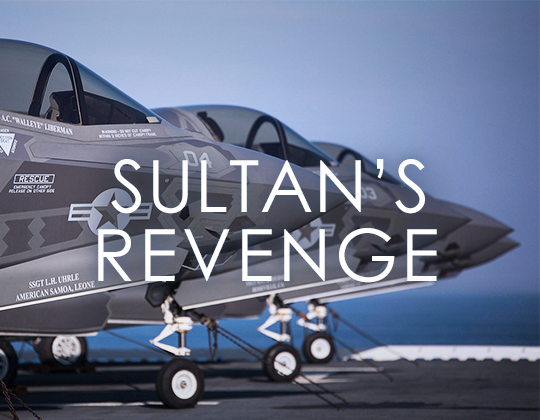

Date: 2 January 2025
Location: Mediterranean Sea
Playable Side: Greece
Duration: 20 Hours
The events during this scenario is a sequel to the fictional 2019 Aegean in Flames naval scenario
After a major defeat, the turkish navy took time to re-evaluate its position in the Aegean.
With the Israel Presence near the Cyprus EEZ, we cannot outmatch the triple alliance of Egypt, Israel and Cyprus.
Thus our main target is the oil reserves in the Aegean Sea. The Greek Goverment isnt keen on negotiating and it tries to leave Turkey with empty hands.Supreme Military Council has authorized a pre-emptive strike that would destabilize Greece's defence capabilities. The shock and awe will prevent them from sully escalating a war with Turkey's Defence Forces.
With the delivery of the Anadolu LHD (mini aircraft carrier) and the aqcuisition of the F35 B aircraft (one squadron), the turkish navy gained blue water capabilities
Together with the parallel delivery of a squadron of F35As located at the Balikesir AFB, the combined Stealth aircraft fleet comprises of a potent Alpha strike force
The goal of this scenario is to sneak in the Greek Integrated Air Defence System (IADS) and achieve devasting attacks against both military and political targets like the Greek Parliament, Pentagon, Hi-SAM batteries (S-300 PMU 1and Patriot PAC 3) and SSM Exocet Coastal defence (located in islands in the Northern Aegean).
With the Sultan's order, now it is time to turn the table and conduct an air strike at the heart of the Hellenic Armed Forces. This will greatly reduce and destabilize their defence capabilities which will in turn, force them to hastly sit on the negotiation's table for the Oil share in the Aegean Sea.